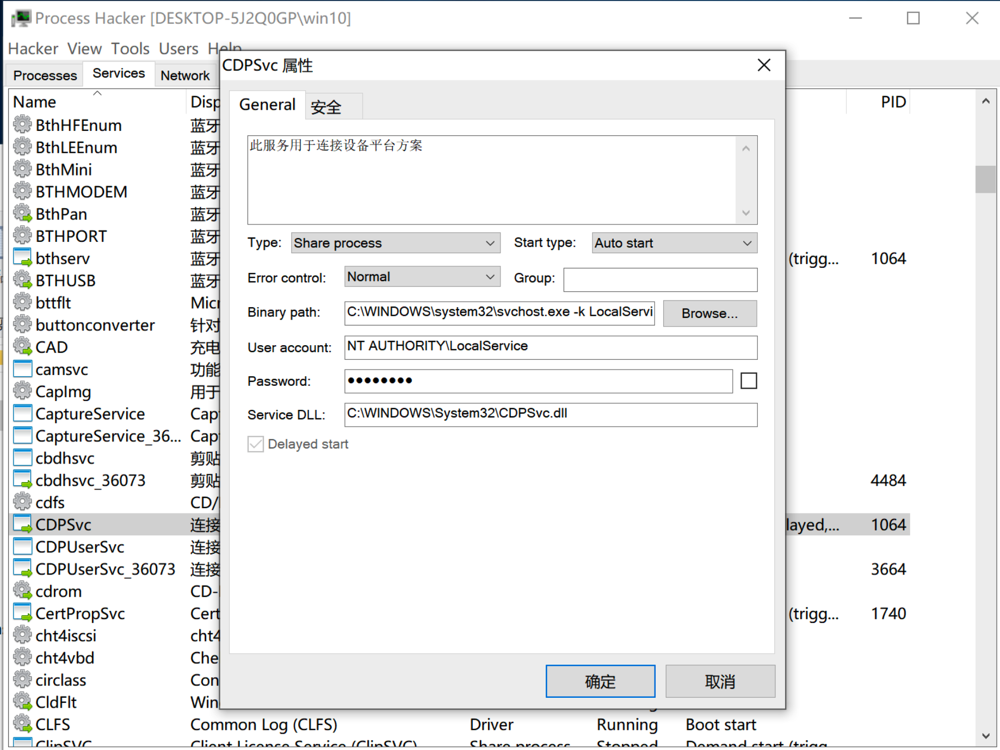
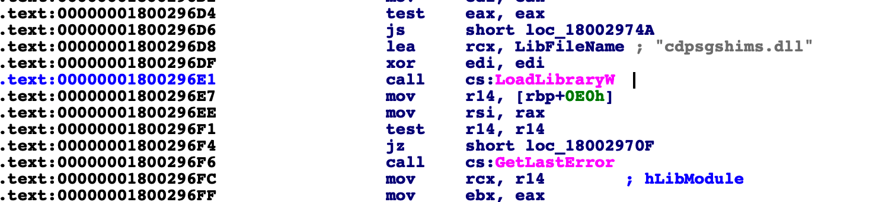
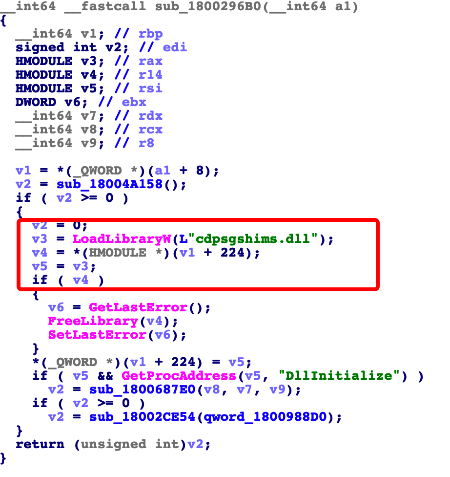
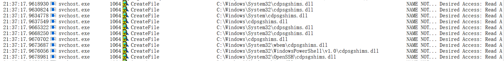
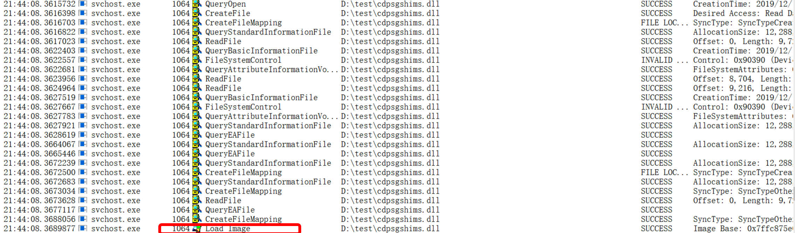
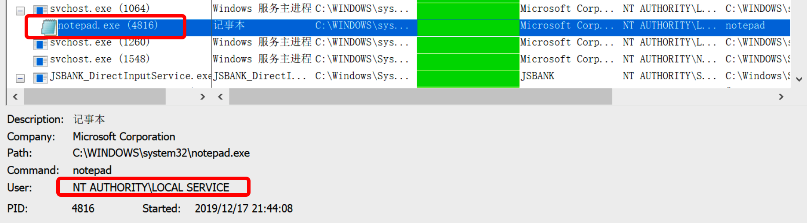

CDPSvc提权-复现
前言
这是对cdpsvc这个服务的一个dll劫持的漏洞复现。主要原理是cdpsvc服务在启动时会通过调用来加载缺少的cdpsgshims.dll。按照Windows的DLL搜索顺序，它将首先尝试从“系统”文件夹中加载它，然后遍历存储在PATH环境变量中的目录列表，因此，如果这些文件夹之一配置了弱权限，则可以植入DLL的“恶意”版本，从而能够以NT AUTHORITY\LOCAL SERVICE在重新启动时执行任意代码。
来自：https://itm4n.github.io/cdpsvc-dll-hijacking
这个服务在widnows 10 17601之后就默认自启动
正文
通过process hacker可查看cdpsvc服务的位置，C:\Windows\System32\cdpsvc.dll

通过ida反汇编dll，可看到cdpsvc.dll加载了cdpsgshims.dll


我们用重启cdpsvc服务，同时用process monitor查看cdpsvc服务启动过程，可看到这样的场景，服务从环境变量路径中查找了cdpsgshims.dll文件。

我们编写一个dll验证一下，在dll入口处添加一个打开程序。
1 | #include "pch.h" |
将调试器改为Release和x86/x64，进行编译，同时新建一个文件夹test，添加到PATH中，将编译后的文件重命名为cdpsgshims.dll后放入test文件夹，重启cdpsvc服务。

看到确实加载了dll，而且查看到notepad程序

到此算是证明成功。
有大佬写了dll的劫持，连接如下：
https://github.com/itm4n/CDPSvcDllHijacking
转载请注明来源，欢迎对文章中的引用来源进行考证，欢迎指出任何有错误或不够清晰的表达。可以在下面评论区评论，也可以邮件至 heiseqiubite@qq.com
文章标题:CDPSvc提权-复现
本文作者:单程
发布时间:2019-12-17, 19:46:06
最后更新:2019-12-18, 10:44:38
原始链接:http://yoursite.com/2019/12/17/CDPSvc-DLL%E5%8A%AB%E6%8C%81-%E5%A4%8D%E7%8E%B0/版权声明: "署名-非商用-相同方式共享 4.0" 转载请保留原文链接及作者。